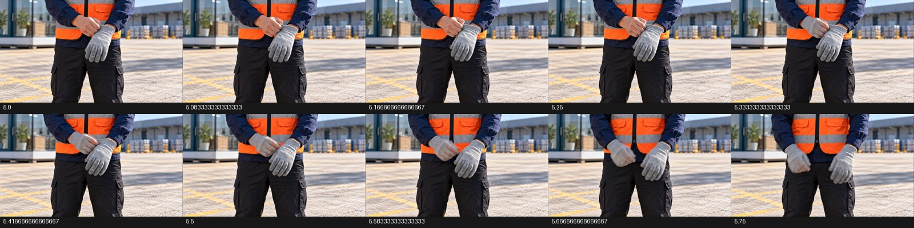

AI 실행 결과 발표대회 · 승인 V8 C03
장갑 착용 보완 원본
Lite 10크레딧 1회 · 잔액 40 · 8초 원본
보완 실패 · 본편 채택 보류
오른손을 빈 장갑에 넣지 않고 왼손 장갑을 만지다가 오른손 표면에 장갑이 생깁니다. 최종 양손 장갑 상태만으로 정상 착용으로 판정하지 않았습니다. K03 요청은 하지 않았으며 같은 지시 반복 없이 40크레딧을 보존했습니다.
K04 · 착용 근접 인서트 take03
1280×720 · 24fps · H.264 · 오디오 트랙 없음 · 재인코딩하지 않은 생성 원본
전환 구간 확인
5.0~5.75초, 2프레임 간격 추출 표본입니다.

정확한 제출 프롬프트
8초, 16:9, 720p. 입력 첫 프레임에서 이어지는 고정된 허리와 손 근접 실사 숏. 손과 조끼가 프레임 안에 끝까지 보인다.
화면 왼쪽은 기사의 맨 오른손이다. 화면 오른쪽의 왼손은 회색 장갑을 이미 끼고 있으며 별도의 빈 회색 장갑 한 짝을 들고 있다. 장갑은 총 두 짝이다.
왼손이 쥐고 있는 별도 빈 장갑의 입구를 배 앞에서 잡아 준다. 맨 오른손은 그 빈 장갑 안으로 천천히 들어간다. 오른손 손가락 다섯 개가 모두 장갑 안으로 들어가고 장갑이 오른 손목까지 올라온다. 이미 왼손에 낀 장갑은 벗기지 않고 그대로 유지한다. 마지막에는 두 손을 조금 떨어뜨려 두 손 모두 회색 장갑을 낀 상태를 2초 유지한다.
이 한 동작만 한다. 장갑을 만지는 시늉으로 끝내지 않는다. 말·음악·카메라 이동·새 인물·추가 소품·화면 글자 없음. 옷과 장갑의 작고 자연스러운 마찰 소리만. 배경은 움직이지 않는다.
C03 계획8컷 원본은 모두 있지만 장갑 벗기·착용 개그는 미해결입니다. 기존 대사/B 공개 부분과 K05·K06 연결, 전체 음향·편집은 추가 검토가 필요합니다.